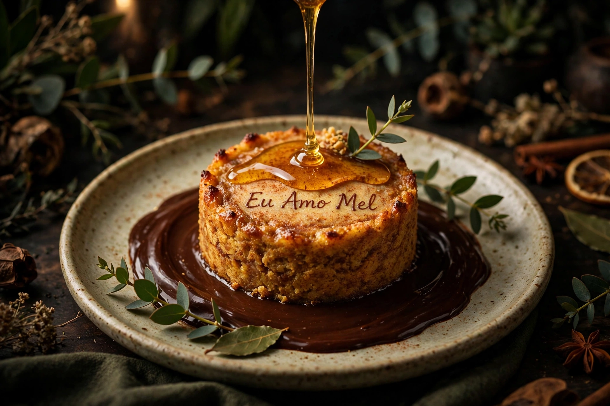

Combo oficial do 6º Festival Eu Amo Café (18/10 a 15/11/2026) • Verificado
Dupla dos Sonhos
Cappuccino especial harmonizado com o “Eu Amo Mel”
Cappuccino especial harmonizado com o “Eu Amo Mel” — bolinho artesanal de especiarias sobre lago de chocolate meio amargo e espuma aveludada de mel.
- HarmonizaçãoCacau & Mel
- Base de caféDouble shot arábica
- VaporizaçãoMicroespuma sedosa
R$ 34,90
Investimento no combo
*Preço exclusivo do festival (18 de outubro a 15 de novembro de 2026). Não representa preço fixo permanente do cardápio.
Pedir pelo Instagram @cafejardim.recife
Imagem gerada por IA — amostra

Edição Festival 2026